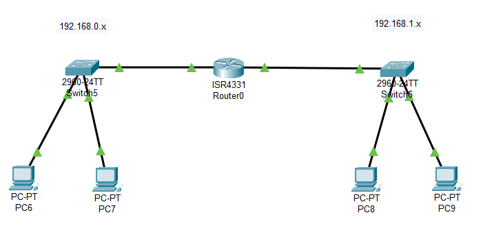
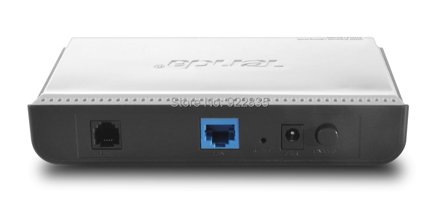

Een Wide Area Network of WAN is een computernetwerk dat meerdere LAN's met elkaar verbindt.
Die LAN's bevinden zich op verschillende fysieke locaties (thuis, op school, in een bedrijf) en deze moeten aan elkaar gekoppeld worden als men informatie wil uitwisselen tussen de verschillende netwerken.
In principe kan je twee LAN's aan elkaar koppelen met een router en bijvoorbeeld twee UTP kabels. Computers in netwerk A kunnen dan informatie opvragen uit netwerk B en omgekeerd.

Als we het ultieme voorbeeld van een WAN bekijken (het internet) dan is het echter iets complexer dan dat. Om toegang te krijgen tot alle netwerken van het internet moeten we ons eigen LAN verbinden met het netwerk van de internetprovider.
De internetproviders in België zijn voornamelijk Telenet en Proximus. Deze hebben historisch gezien geen glasvezelkabel of UTP kabel tot bij jou thuis aangelegd die je gewoon kan inpluggen op jouw router.
Proximus was vroeger voornamelijk een telefonie-provider en Telenet een televisie-provider. Vandaar dat zij in het verleden telefonie- en coaxkabels voorzien hebben om jou diensten aan te bieden.
Het signaal dat op de telefoon of coaxkabel gezet wordt is natuurlijk niet hetzelfde als het signaal dat op een ethernetkabel gezet wordt binnen het LAN. Om de vertaling te maken wordt er een modem gebruikt.
Een modem moduleert of demoduleert het signaal zodat het zo efficiënt mogelijk een lange afstand (meerdere kilometers) kan afleggen.
Onderstaand zie je een basis ADSL modem. Het telefoonsignaal komt links binnen (zwarte aansluiting) en het Internet komt buiten via Ethernet (blauwe aansluiting).

Ondertussen zijn de telecomoperatoren begonnen met het uitrollen van Fiber To The Home (FTTH). Zoals de naam al doet vermoeden komt de glasvezelkabel nu tot bij jou thuis en vervangt deze de oude telefonie- of coaxkabel.